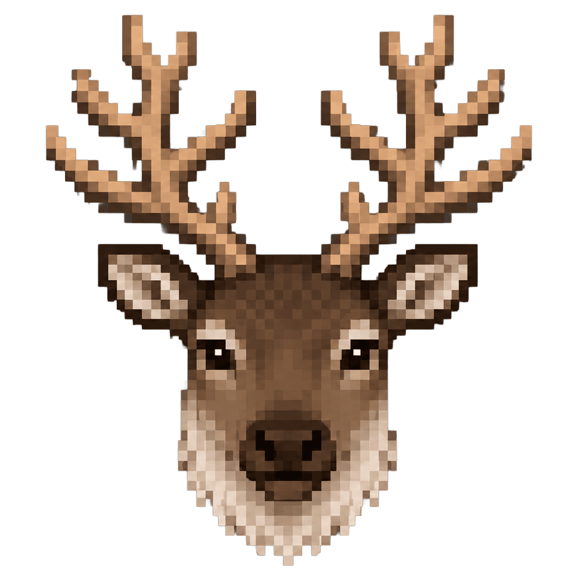

Игра народов Европейского Севера
Поймай оленя
За 30 секунд поймай как можно больше оленей. Нажимай по бегущим оленям, а после попадания на поле появится новый.
Поймай оленя
Поймано
0
Время
60 сек.
На поле
0 оленей
Кликай по оленям!
Игра завершена
Твой результат
0
Отличная попытка!
Как играть
На Севере умение быстро и точно набросить аркан на оленя было очень важным навыком. В этой игре тебе предстоит стать настоящим северным оленеводом!
- Нажми кнопку «Начать игру».
- На игровом поле будут появляться бегущие олени.
- Щёлкай по каждому оленю как можно быстрее, чтобы поймать его.
- За каждого пойманного оленя начисляются очки.
- Постарайся поймать как можно больше оленей до окончания времени.
Чем быстрее ты реагируешь, тем выше будет твой результат!